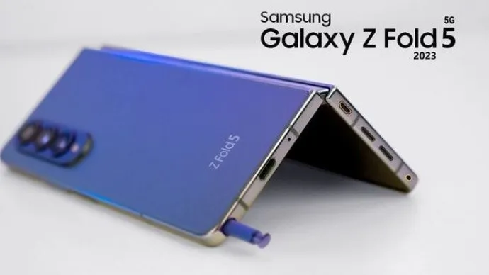

El Samsung Galaxy Z Fold 5 es la quinta generación del smartphone
plegable tipo tablet de Samsung, refinando sobre anteriores generaciones
con un nuevo mecanismo de pliegue. El Galaxy Z Fold 5 cuenta con una
pantalla interna AMOLED de 7.6 pulgadas con tasa de refresco variable de
120Hz, y una pantalla cover AMOLED de 6.2 pulgadas protegida por vidrio
Gorilla Glass Victus 2. El sistema de cámaras del Galaxy Z Fold 5 se
mantiene prácticamente intacto, con una cámara triple con un sensor
principal de 50MP, uno ultrawide de 12MP y un telefoto de 10MP, y una
cámara selfie de 10MP para la pantalla externa y una de 4MP para la
pantalla interna. La batería tiene una capacidad de 4400 mAh y soporta
carga rápida tanto por cable como inalámbrica y completa sus
características con resistencia al agua IPX8, parlantes stereo, lector
de huellas lateral, soporte para stylus y corre OneUI 5.1.1 basado en
Android 13.